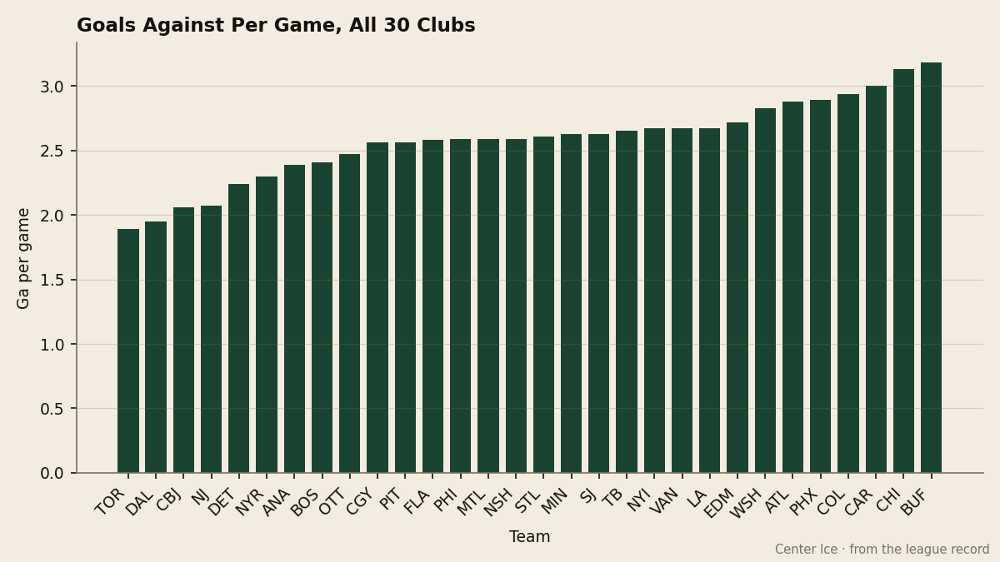
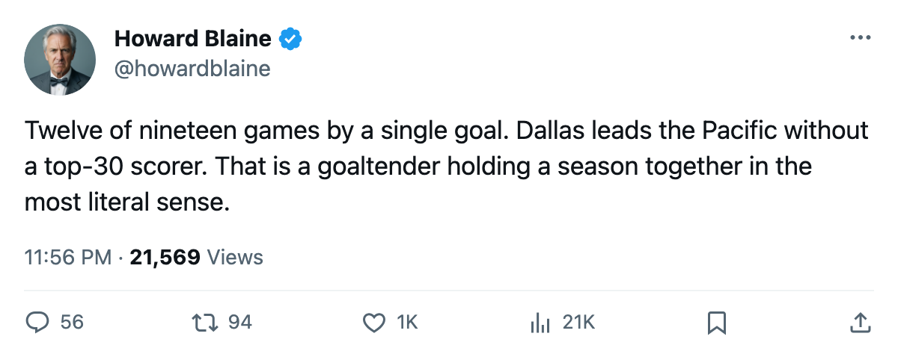
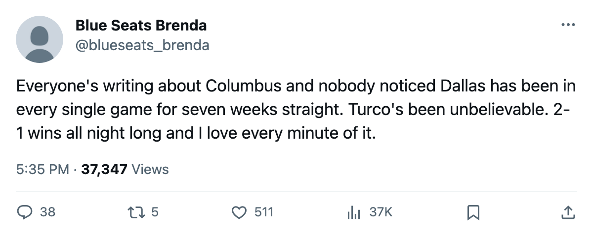

Two-Goal Hockey: Dallas Leads the Pacific on the League's Second-Best Defense and 2.53 Goals a Night
Marty Turco carries a 95 overall, the same grade as Brodeur and Luongo, and the Stars have won 11 games on a payroll that returns $2.15M per point
 Howard BlaineSenior writer, The Blaine Rankings · The Hockey Gazette
Howard BlaineSenior writer, The Blaine Rankings · The Hockey Gazette
The  Dallas Stars Stars allow 1.95 goals per game, the second-fewest in the league behind only
Dallas Stars Stars allow 1.95 goals per game, the second-fewest in the league behind only  Toronto Maple Leafs at 1.89. They score 2.53 per game. Dallas sits first in the Pacific Division, second in the Western Conference, and has lost 4 games in regulation all season.
Toronto Maple Leafs at 1.89. They score 2.53 per game. Dallas sits first in the Pacific Division, second in the Western Conference, and has lost 4 games in regulation all season.
None of which explains why nobody at this desk has written about them.

The number that governs Dallas's season is 12. Of 19 games played, 12 have been decided by a single goal, including 3 overtime losses. Dallas has not lost by more than 2 goals all season. With a goaltender graded 95 in the Bureau's Book, tied with  Martin Brodeur93 and
Martin Brodeur93 and  Roberto Luongo95 for the highest mark among active goaltenders, games stay at one-goal margins because the goaltender will not let them drift.
Roberto Luongo95 for the highest mark among active goaltenders, games stay at one-goal margins because the goaltender will not let them drift.
 Marty Turco97 has started 16 games, won 10, lost 6, allowed 1.80 goals per game, and stopped 0.905 of what he has faced. His 95 overall places him at the top of the Book alongside Brodeur and Luongo. The backup, Jason Bacashihua91, carries an 89 and has appeared in 3 games. Dallas has the top two goaltending grades in the league, if the second is counted on a small sample.
Marty Turco97 has started 16 games, won 10, lost 6, allowed 1.80 goals per game, and stopped 0.905 of what he has faced. His 95 overall places him at the top of the Book alongside Brodeur and Luongo. The backup, Jason Bacashihua91, carries an 89 and has appeared in 3 games. Dallas has the top two goaltending grades in the league, if the second is counted on a small sample.
The offense is the problem nobody at Reunion Arena is losing sleep over. At 2.53 goals per game, Dallas sits in the bottom third of the league.  Mike Modano88 and
Mike Modano88 and  Brenden Morrow86 are not on the top 30 scoring list. The club has outscored its opponents by 11 goals in 19 games, and 11 of those 19 games produced fewer than 5 combined goals for both sides.
Brenden Morrow86 are not on the top 30 scoring list. The club has outscored its opponents by 11 goals in 19 games, and 11 of those 19 games produced fewer than 5 combined goals for both sides.
The arithmetic of a $2.15M point
Dallas spends $58.02M on payroll, which places it 14th of 30. The per-point cost of $2.15M is the fourth-best rate in hockey, behind  Pittsburgh Penguins at $1.88M,
Pittsburgh Penguins at $1.88M,  Nashville Predators at $1.98M, and
Nashville Predators at $1.98M, and  New Jersey Devils at $2.34M. The Stars return more points per dollar than
New Jersey Devils at $2.34M. The Stars return more points per dollar than  Colorado Avalanche at $3.68M or
Colorado Avalanche at $3.68M or  New York Rangers at $3.00M, both of which spend more in absolute terms.
New York Rangers at $3.00M, both of which spend more in absolute terms.
The building holds 16,836 per game, the 12th-highest in the league. Ticket price sits at $82. Revenue of $45.61M against that payroll produces $24.54M in profit, the seventh-best in the league.
What the one-goal games mean
The season series records show Dallas met  Mighty Ducks of Anaheim once,
Mighty Ducks of Anaheim once,  Phoenix Coyotes once, and
Phoenix Coyotes once, and  Columbus Blue Jackets once. Against Columbus Blue Jackets, the single game went to overtime and Dallas won 2-1. Against Phoenix Coyotes, Dallas won 3-0. The Mighty Ducks of Anaheim series is 0-1 to Dallas after 1 game.
Columbus Blue Jackets once. Against Columbus Blue Jackets, the single game went to overtime and Dallas won 2-1. Against Phoenix Coyotes, Dallas won 3-0. The Mighty Ducks of Anaheim series is 0-1 to Dallas after 1 game.
In conference play the Stars are 4-2 in their division so far, with 16 games remaining against Pacific opponents. Dallas has been outscored 20-21 over its last 10 games and sits at 27 points. The club that sits 8 points back of Dallas in the conference,  Minnesota Wild at 19, has played 19 games to Dallas's 19 and faces the same 63 games.
Minnesota Wild at 19, has played 19 games to Dallas's 19 and faces the same 63 games.
The Vezina conversation
Turco's 1.80 goals-against average leads the goaltenders who have played 15 or more games. Martin Brodeur sits at 1.85 in 13 games.  Pascal Leclaire91 has a 1.77 in 11. Turco's save percentage of 0.905 trails Brodeur's 0.910 and Leclaire's 0.915. On the current numbers, the Vezina race runs through those three men, and Dallas has not had a Vezina winner since the league began keeping this record.
Pascal Leclaire91 has a 1.77 in 11. Turco's save percentage of 0.905 trails Brodeur's 0.910 and Leclaire's 0.915. On the current numbers, the Vezina race runs through those three men, and Dallas has not had a Vezina winner since the league began keeping this record.
The Hart conversation does not include a Star. No Dallas player appears on the top 30 scoring list. The club's top scorer is not on the sheet at all in the 30-man table. The 2-1, 3-2, 1-0 margins Dallas keeps producing are what a 95-goaltender generates: the club stays in games it has no business winning and lets the goaltender sort them out.
Nineteen games is a small sample, but a structure that does not require its forwards to outscore anyone is harder to explain away than a hot streak. Dallas is first in the Pacific after 19 games, 8 points ahead of the 8th-place club in its conference. The bottom-third offense has not mattered, because the league's second-best defense has not let it matter yet.

